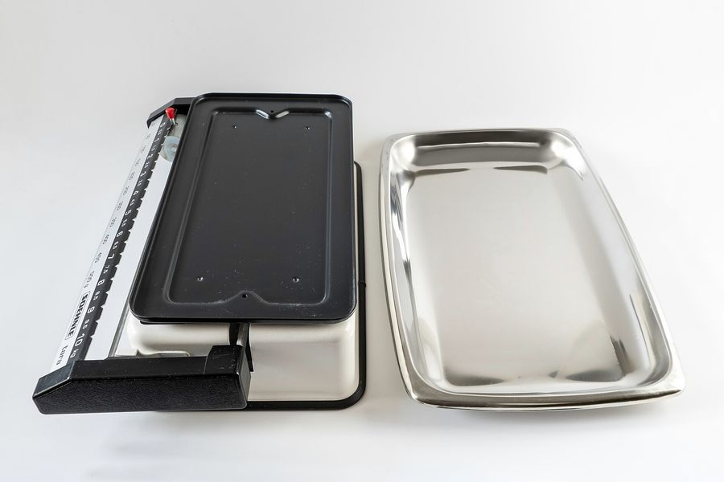

全成分表示は、配合量の多い順に並んでいる
化粧品の容器に並ぶ成分名には、並べ方の決まりがあります。多い順に書くこと、ただし1％以下の成分と着色剤は順不同でよいこと。この二つを知っているだけで、読み方が変わります。
もとになった資料
- 資料
- 医薬品、医療機器等の品質、有効性及び安全性の確保等に関する法律 第六十一条
- 写した日
- 立場
- 体づくり・美容の資格も実務経験もない書き手が、原文を写しています
03 / 08 表示を読む

写真：Soehnle weighing scale up to 10 kg with a detachable tray 3.jpg ／ W.carter ／ CC BY 4.0 （Wikimedia Commons）
{kind=link}
化粧品の容器の裏には、カタカナの成分名がずらりと並んでいます。あの並びは、書き手が好きな順に置いているわけではありません。
並べ方には決まりがあり、厚生労働省の通知がその方法を定めています。決まりを知ると、同じ表示がまったく違うものに見えてきます。
表示の義務はどこから来たのか
出発点は、医薬品医療機器等法の第六十一条です。化粧品は直接の容器または直接の被包に、決められた事項を記載しなければならないと定めています。
並んでいるのは七つの号です。製造販売業者の氏名または名称および住所、名称、製造番号または製造記号、といった具合に続きます。
成分に関わるのは第四号で、「厚生労働大臣の指定する成分を含有する化粧品にあつては、その成分の名称」とあります。指定の中身は、告示で決められています。
平成十二年九月二十九日付けの厚生省告示第332号が、その指定にあたります。名称を記載しなければならない成分として、厚生労働大臣が指定したものです。
つまり「全成分表示」という言い方は通称で、法律の上では第六十一条第四号と告示の組み合わせでできています。
並び順の決まりと、その例外
並べ方を書いているのは、平成十三年三月六日付けの医薬監麻発第220号・医薬審発第163号という通知です。表示の方法をまとめて示しています。
通知には「成分名の記載順序は、製品における分量の多い順に記載する。」とあります。これが原則です。
ただし例外があります。「1％以下の成分及び着色剤については互いに順不同に記載して差し支えない。」という一文です。
成分名そのものにも決まりがあります。通知は、邦文名で記載し、日本化粧品工業連合会が作成した化粧品の成分表示名称リスト等を利用するよう求めています。
同じ原料でも、この表示名称に直されてから並びます。原料の商品名と表示名称が違うのは、そのためです。
書かなくてよい成分もある
表示に出てこない成分もあります。通知はキャリーオーバーと呼ばれるものについて、記載を求めていません。
対象は、配合されている成分に付随する成分で、製品中にその効果が発揮されるより少ない量しか含まれないものです。不純物もここに含まれます。
逆に、まとめて書いてはいけないものもあります。混合原料、いわゆるプレミックスについては、混合されている成分ごとに記載することとされています。
表示を省略できる場合もあります。薬機法施行規則の第二百二十一条の二は、成分の名称を直接の容器に書かなくてよい場合を四つ挙げています。
一つ目は外部の容器または外部の被包に書いてある場合、二つ目は容器に固着したタッグまたはディスプレイカードに書いてある場合です。
三つ目は、内容量が五十グラムまたは五十ミリリットル以下の容器に入っていて、前の二つをどちらも持たない小容器の見本品で、添付する文書に書く場合です。
四つ目は、外部の容器を持つ化粧品のうち、内容量が十グラムまたは十ミリリットル以下の容器に入っているものです。この場合も添付の文書などに書けます。
小さな容器に成分名が見あたらないときは、箱や添付の紙を探すことになります。表示がないのではなく、置き場所が移されていることがあります。
ここまでをまとめると、表示から読み取れることと読み取れないことがはっきりしてきます。読み取れるのは、上位に何が来ているかです。
読み取れないのは、下位の順序と、正確な配合量です。成分の名前が載っていることと、量が多いことは、別のことになります。
それでも表示には値打ちがあります。避けたい成分があるとき、その名前が上位にあるか下位にあるかは、表示の並びから判断できます。
表示名称のもとになっている一覧は、日本化粧品工業会が作成し、公開しています。成分ごとに、容器へどの名前で書くかが決められています。
そのため、同じ物質でも原料の商品名と表示名称が一致しないことがあります。名前が違って見えても、中身が違うとはかぎりません。
なお医薬部外品は、化粧品とは別の扱いです。有効成分とその他の成分の書き分けがあり、化粧品の決まりをそのまま当てることはできません。
医薬監麻発第220号（平成13年3月6日）